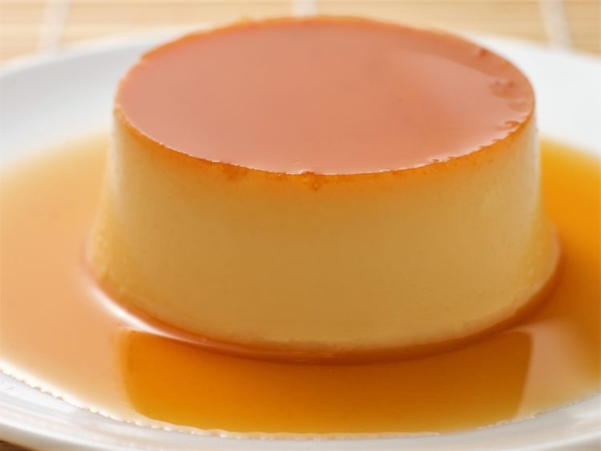

Flan

Ingredients
- 1 cup granulated white sugar
- 3 eggs
- 1 can sweetened condensed milk (14 ounces)
- 1 can evaporated milk (12 ounces)
- 1 tbsp vanilla extract
Steps:
- Combine the butter, sugar, vanilla extract with an electric mixer until slightly paler.
- Beat in the eggs, then the mashed banana.
- In a separate bowl, combine the remainder of the ingredients, then add to mixture.
- Spoon mixture into 12 cm x 25 cm loaf pan and bake in preheated oven at 160 degrees C for 1 hour.
Back to the main page